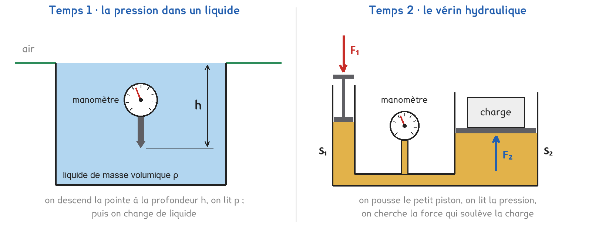
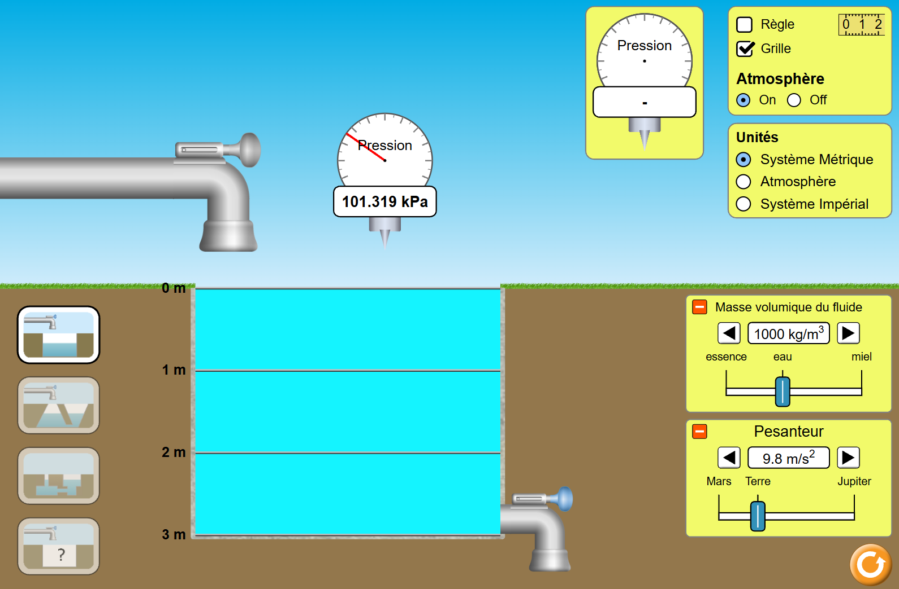

Tle Bac Pro · MMCM · MVTR · TP sur simulation SIM-03
Comment un cric permet-il de soulever une voiture avec la seule force d'un bras ?
2 figures
Sujet. Pour changer une roue, on glisse un cric sous la voiture et on actionne son levier d’une main. Le cric soulève pourtant un côté de la voiture, soit environ 600 kg.
Problématique : comment un cric permet-il de soulever une voiture avec la seule force d’un bras ?

Les simulations. Temps 1 : « Sous pression », de PhET, ou sans réseau sa copie phet/under-pressure_fr.html. Temps 2 : « Le vérin hydraulique », verin-hydraulique.html. Les fichiers sont sur l’ENT ou la clé du professeur.
a) Convertir, avec 1 bar = 100 000 Pa = 100 kPa. Le premier est fait.
| 1 bar | 101,3 kPa | 0,350 bar | 2 kPa |
|---|---|---|---|
| 100 000 Pa | ………… Pa | ………… Pa | ………… bar |
Les pistons du vérin sont ceux de seringues du commerce.
b) Calculer la surface du piston de chaque seringue. La première est faite.
| La seringue | 10 mL | 20 mL | 60 mL |
|---|---|---|---|
| Diamètre intérieur D | 14,5 mm | 19,1 mm | 26,7 mm |
| Surface S = π × D² ÷ 4 | 165 mm² | ………… mm² | ………… mm² |
| Surface en m² | 0,000 165 m² | ………… m² | ………… m² |
Voici l’écran de « Sous pression » : bassin rempli, manomètre posé dans l’air au-dessus de l’eau. La simulation écrit les nombres avec un point : c’est notre virgule.

Capture de la simulation « Sous pression », PhET Interactive Simulations, University of Colorado Boulder, CC BY-NC 4.0.
c) Relever la pression affichée. Quelle pression le manomètre mesure-t-il ?
p = ……………… kPa : c’est la pression ………………………………………
Temps 1 · le bassin. On plonge la pointe d’un manomètre à différentes profondeurs, puis on change de liquide : de quoi dépend la pression dans un liquide immobile ?
Temps 2 · le vérin. Deux seringues pleines d’huile sont reliées par un tuyau. On pousse la petite ; une charge est posée sur la grande : quelle force la soulève ? Chaque binôme fait les deux temps. Au second, une moitié de la classe prend la paire 1, 10 mL et 60 mL ; l’autre la paire 2, 20 mL et 60 mL.
d) Compléter le tableau des deux temps.
| Temps 1 · le bassin | Temps 2 · le vérin | |
|---|---|---|
| Ce qu’on règle | la profondeur h, puis ……………… | ……………………………… |
| Ce qu’on lit | ……………………………… | la force F1 et ……………… |
| Ce qu’on cherche | ……………………………… | ……………………………… |
Deux prévisions, à faire avant toute mesure.
e) Entourer. Dans le miel, à la même profondeur, la pression est :
plus grande que dans l’eau · la même · plus petite
Pour soulever 2 kg, soit 19,6 N, posés sur la grande seringue, on pousse la petite avec : plus de 19,6 N · 19,6 N · moins de 19,6 N
Avant de commencer. Ouvrir « Sous pression », bassin carré. Cocher Grille. Remplir le bassin avec le robinet du haut jusqu’à la ligne 0 m. Laisser Atmosphère sur On.
f) Relever, puis calculer l’écart Δp = p − p0 avec la surface.
| Profondeur h (m) | 0 | 1 | 2 | 3 |
|---|---|---|---|---|
| p lue (kPa) | p0 = ………… | ………… | ………… | ………… |
| Δp = p − p0 (kPa) | 0 | ………… | ………… | ………… |
| Δp ÷ h (kPa/m) | sans objet | ………… | ………… | ………… |
À 2 m de profondeur, pour les trois liquides, avec g = 9,8 N/kg :
| Le liquide | essence | eau | miel |
|---|---|---|---|
| ρ affichée (kg/m³) | 700 | 1 000 | 1 420 |
| p lue à 2 m (kPa) | ………… | ………… | ………… |
| Δp = p − p0 (Pa) | ………… | ………… | ………… |
| Δp ÷ (g × h) | ………… | ………… | ………… |
Ouvrir « Le vérin hydraulique », choisir Deux seringues et votre paire : 10 mL ou 20 mL pour la Petite seringue, 60 mL pour la Grande seringue.
g) Relever, puis calculer (g = 9,81 N/kg). Paire : ……… mL et 60 mL.
| Charge m (kg) | 1 | 2 | 3 | 4 |
|---|---|---|---|---|
| Poids P = m × g (N) | ………… | ………… | ………… | ………… |
| F1 qui soulève (N) | ………… | ………… | ………… | ………… |
| p lue (bar) | ………… | ………… | ………… | ………… |
| F2 = p × S2 (N), p en Pa | ………… | ………… | ………… | ………… |
| F2 ÷ F1 | ………… | ………… | ………… | ………… |
La course des pistons, avec 2 kg, puis le cric.
h) Relever et calculer.
Petit piston : d1 = ………… mm · grand piston : d2 = ………… mm · d2 ÷ d1 = …………
Cric : F1 = ………… N · p = ………… bar · poids de 600 kg : P = ………… N
i) Schématiser votre vérin : pistons, huile, manomètre, forces F1 et F2.
Le schéma se dessine sur la feuille du TP.
j) Temps 1 : Δp ÷ h est-il constant ? Que retrouve-t-on avec Δp ÷ (g × h) ?
k) Comparer F2 à P, F2 ÷ F1 à S2 ÷ S1, et d2 ÷ d1 à S1 ÷ S2.
l) Comparer avec l’autre paire : qui pousse le moins fort, et pourquoi ?
m) Calculer, en bar, la pression due à 10 cm d’huile. La comparer à p pour 2 kg.
L’huile, ρ = 870 kg/m³, peut avoir 10 cm de plus d’un côté que de l’autre.
En déduire pourquoi la pression est la même dans tout le vérin.
Le levier du cric multiplie par 8 la force de la main.
n) Quelle force la main doit-elle exercer ? Est-ce possible pour un adulte ?
o) Citer deux effets d’un vrai cric que la simulation ne montre pas.
p) Répondre à la problématique en deux phrases.
Ce que ce TP a établi, et qui vaut pour tout liquide immobile :
À RETENIR
Dans un liquide immobile, la pression augmente avec la profondeur : Δp = ρ × g × h, avec Δp en pascals, ρ en kg/m³, g en N/kg et h en mètres. C’est la relation de Pascal.
Un vérin transmet la même pression aux deux pistons : F2 ÷ F1 = S2 ÷ S1. Le grand piston reçoit une force plus grande, mais il se déplace moins : d2 ÷ d1 = S1 ÷ S2.
TP sur simulation de physique-chimie, terminale. Le travail se fait sur la feuille du TP : cette page en est la version à l'écran, sans les lignes à remplir. Rien n'est enregistré.